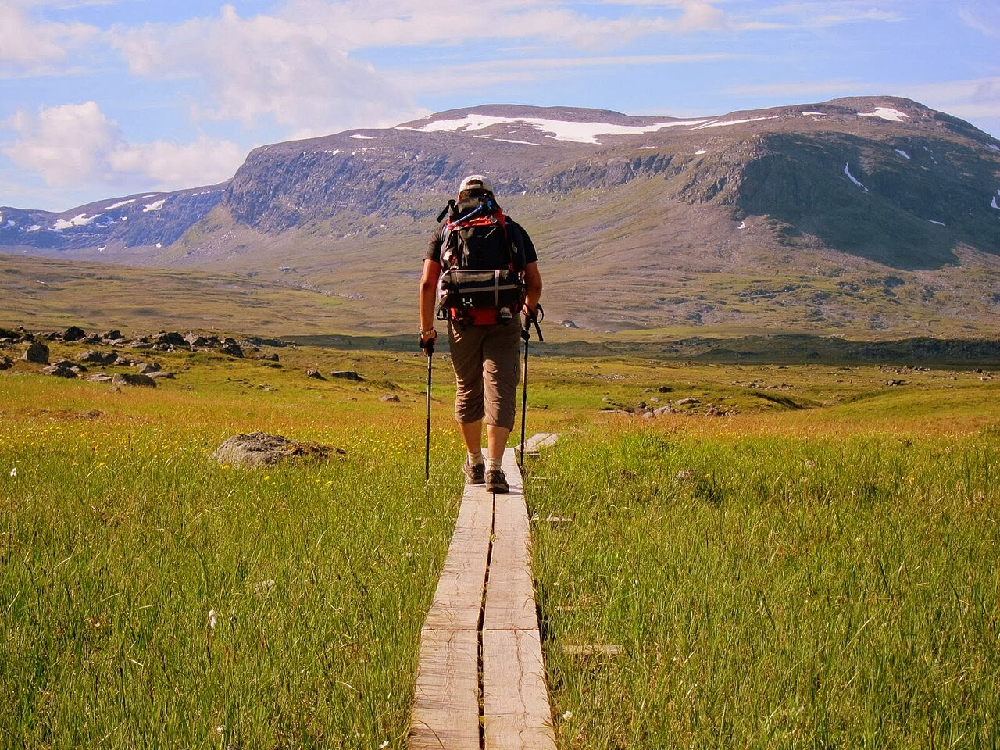
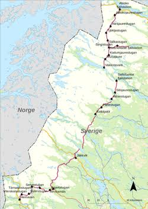
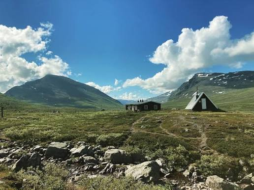
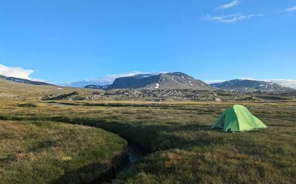
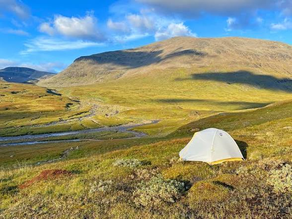

0 / 0
Ditty bag — Knut's small items ›
The little stuff sack. Photographed once, never fully trusted since.

Route & Elevation

107km total
7+2hike + summit/buffer
1150m high point
From the Trail


